Part VI – Memories
FIRST REUNION – 1973
The first Alain Reunion was held in 1973 at the farm of Gene and Edithe Lessard. It was held at the end of July to celebrate Grandma's ninetieth birthday.
Many relatives from Jackfish came to Hudson Bay to join in the fun of the dinner and dance on Saturday night. We all remember Uncle Tony, Grandma's brother, making a big splash with Rolland when they got up and kissed (more than once) in answer to people clanging their cups with spoons. Grandma attended the dinner and stayed for the dance to visit with her family.
A Come and Go Tea was held for Grandma at the Lessard farm the next afternoon. The community was invited to come renew acquaintances with Alain family members that were home again.
Grandma posed for the Hudson Bay Post-Review at the tea.
Everyone agreed at this time that we should reunite regularly. As a five-year interval seemed suitable, 1978 was set for the next reunion.
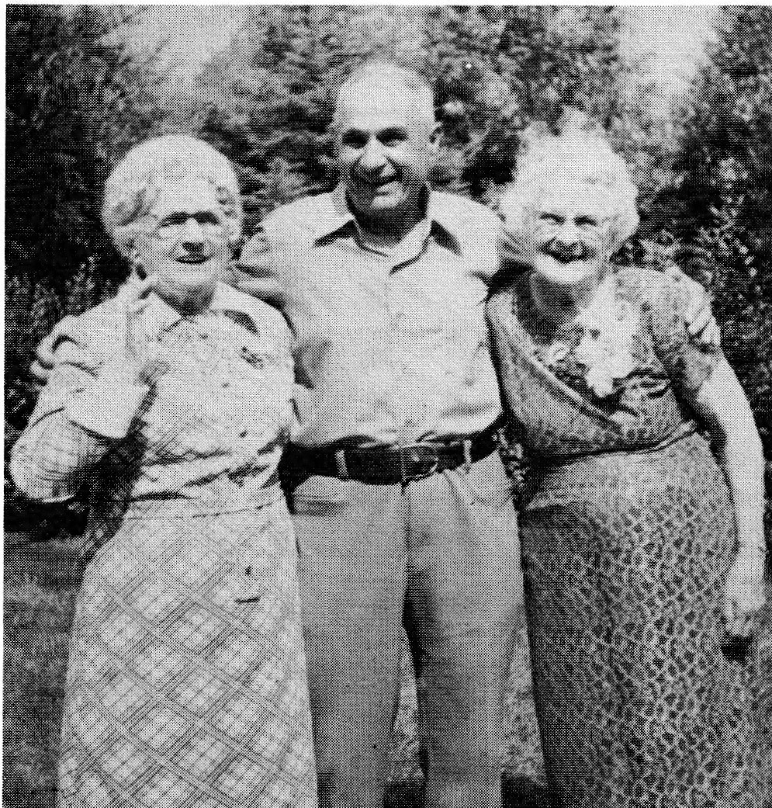
SECOND ALAIN FAMILY REUNION – 1978
The eight children of Henry and Alma Alain held a family reunion at the farm of Gene and Edithe Lessard at the end of July 1978. The occasion not only commemorated Grandma's (Alma Alain) ninety-fifth birthday but also marked the fiftieth year of the family's settlement in the district.
Grandpa had passed away in December 1967. Unfortunately, Grandma was not able to join in the reunion festivities since she was a patient in the Hudson Bay Union Hospital. She had been in good health until recently.
Of her eight children, three live in the Veillardville district: sons Moise and Rolland, and daughter Edithe Lessard. Three reside in British Columbia: Louis is from Vernon, Paul of Kamloops, and Yvonne (Mrs. Pat O'Brien) lives in Vancouver. Marie Paule (Mrs. Angus Menzies) and Berthe (Mrs. Paul Marsollier) both live in Flin Flon, Manitoba. At that time, there were 38 grandchildren, 37 great grandchildren and 3 great-great grandchildren. All the grandchildren, except 5, were able to attend.
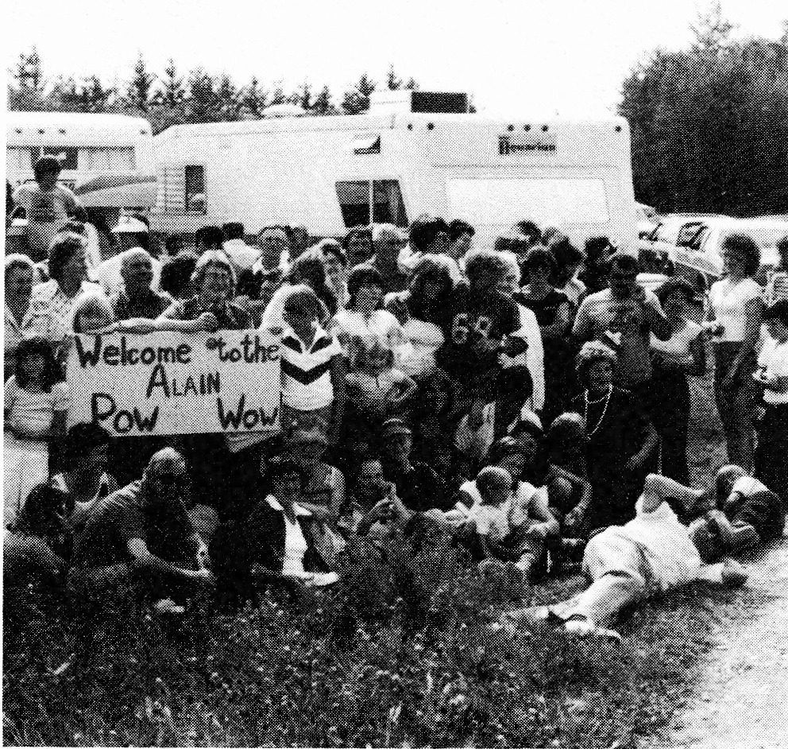
Dubbed the "Alain Pow-Wow", this reunion brought one hundred and twelve descendants together from five provinces, British Columbia, Alberta, Saskatchewan, Manitoba and Nova Scotia plus the Northwest Territories. The furthest distance travelled was by grandson Keith Menzies and his wife Edith of Waterville, Nova Scotia, who came three thousand miles.
Family members began arriving as early as the Wednesday for the event. A family dinner was held in the Veillardville Hall on Saturday, followed by a dance. It was the first time that the new addition to the Hall had been used. The celebrations ended on Sunday with an outdoor potluck dinner.
Although the B.C. relatives complained of the mosquitoes and cold weather, they enjoyed the festivities as much as the rest of us!
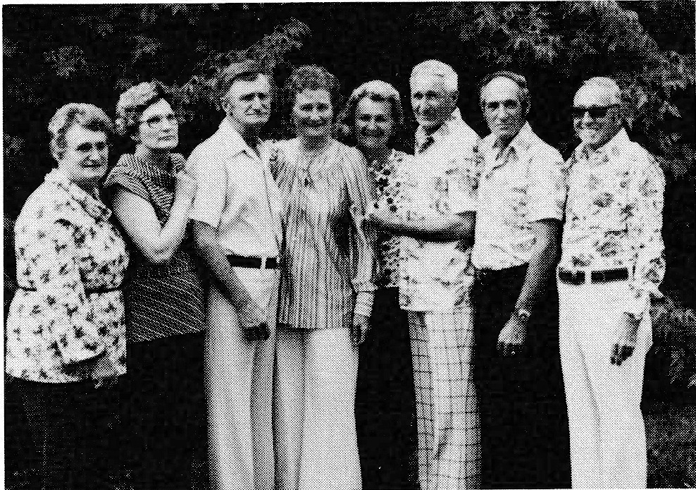
THIRD REUNION - 1983
Rolland and Yvonne Alain's farm was the scene of the third family reunion. There were 120 family members and friends in attendance. Relatives from British Columbia, Alberta, Manitoba, the Northwest Territories and Saskatchewan came for the affair. Although many arrived at the farm ahead of time, the festivities were again planned for the long weekend, July 30, following Grandma's birthday. She would have been 100 years old this year. However, she had passed away in December of 1982.
A few "added attractions" were held at this reunion. The men had a bathing suit contest on Saturday afternoon. The women enjoyed seeing the men in female beach attire! A few hours later, each of Grandma's sons' and daughters' families showed some sort of talent in a "skits" program. The acts were enjoyed by one and all. Following the entertainment, everyone sat down for a meal Saturday evening. A dance was held at the Veillardville Hall.
The family hosted a Come and Go Tea for the community on Sunday afternoon. In the evening, a film of the last reunion was shown. It ended with a sing-song.
Besides the fun and frolic, family members were honored. Moise "Smokey" and Verna Alain were honored on their 50th Anniversary as well as Rolland and Yvonne on their 40th; niece Marlyne and Adolf Reindl of Saskatoon, their 25th; and cousin Marguerite and George Dion of North Battleford, their 45th.
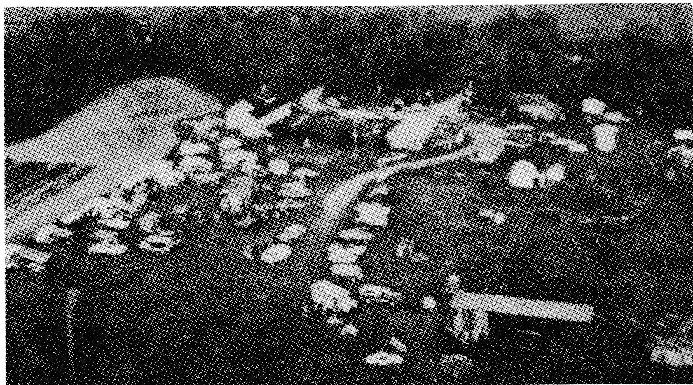
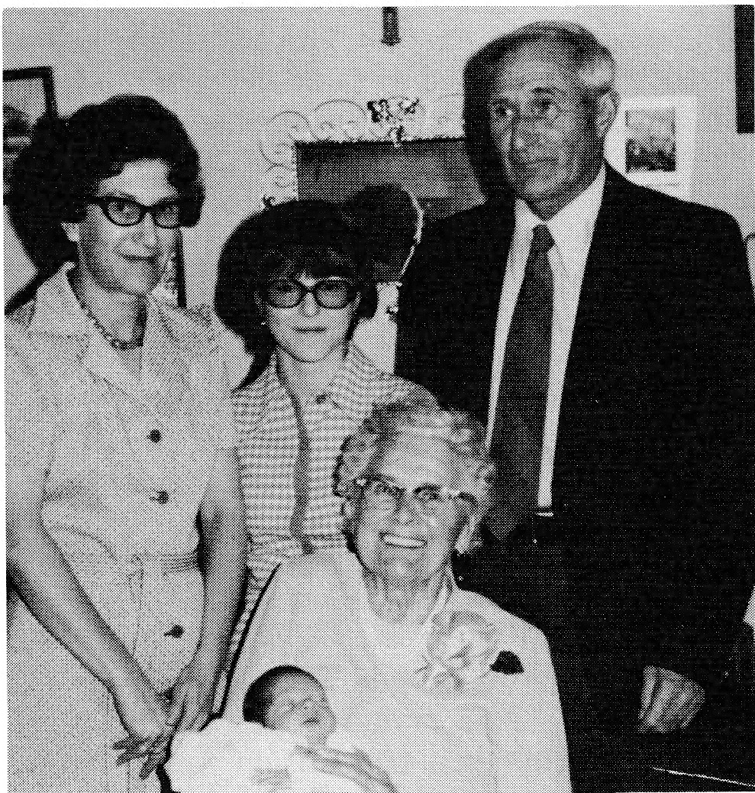
VEILLARDVILLE COUPLE CELEBRATE GOLDEN WEDDING ANNIVERSARY
(A news item taken from the Hudson Bay Post-Review Wednesday, July 10, 1957)
Mr. and Mrs. Henry Alain, Veillardville, celebrated their 50th wedding anniversary, Monday, July 8th. Mr. and Mrs. Alain have resided in the district since 1928.
A Saturday morning church service in St. Anthony's Church in Veillardville, marked the golden jubilee celebration. Father Fitzgerald officiated at Mass and the renewal of their marriage vows made fifty years ago at Jackfish, Saskatchewan. A special blessing was read from His Excellency, Bishop Blais, Prince Albert.
During Mass, Mrs. Mondor sang an appropriate hymn, followed by "O Lord Most Holy", by the four daughters of the four sons of Mr. and Mrs. Alain. A reception in the church basement followed.
On Sunday, July 7th, the entire Alain family, with the exception of Mrs. Marie Paule Menzies of Flin Flon, gathered in the community hall for an anniversary dinner. Thirty-seven children and grandchildren were present.
Mr. Henry Alain was born in St. Ubald, Quebec, January 25, 1882. He came out West in 1902 and in 1907 married Alma L'Heureux at Jackfish, Saskatchewan. Mrs. Alain was born in Winnipeg, Manitoba, July 31st, 1883.
The Alains farmed at Ruddell for seven years and then moved to Delmas where they resided for the next eighteen years. It was here that the family of eight children grew up. In 1928 the family moved to the Veillardville district where they farmed until Mr. Alain retired.
Two daughters, Mrs. Yvonne Wyman, Vancouver, and Mrs. Bertha Marsollier, Flin Flon, are visiting their parents during the celebration. Other members of the family residing in the district are Mrs. Edithe Lessard, and Moise, Louis, Rolland and Paul Alain. Mr. and Mrs. Alain have thirty-one grandchildren with all present but two married girls who were unable to attend.
On Monday, open house was held at the Sr. Alain home, where many friends and relatives called to extend their best wishes to the happy couple. In the evening a large crowd of friends and relations gathered for presentations.
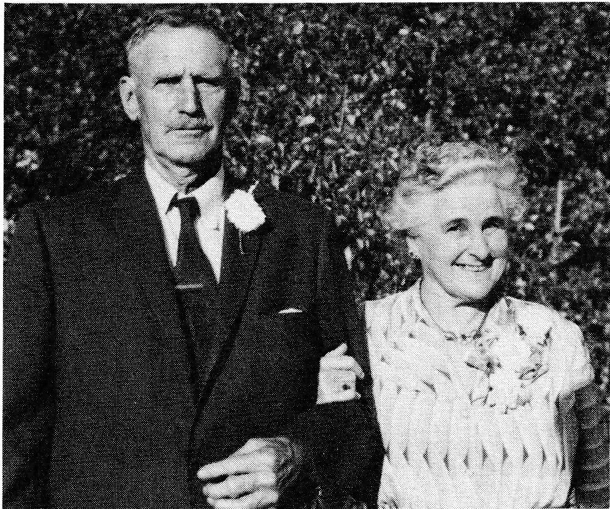
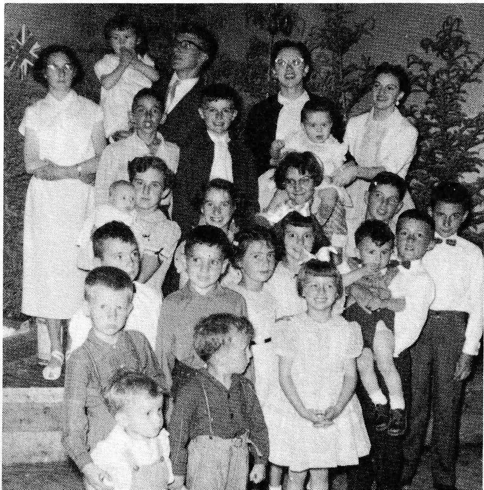
50th Wedding Anniversary of Angus and Marie Paule Menzies
Their 50th Wedding Anniversary celebration was a pleasant surprise for the guests of honor as family and friends gathered at the Lobstick Hall, Creighton, Manitoba, on August 7, 1982. Although the original plans called for strict secrecy, all was fine until one card arrived at their home with the words of "regret at not being able to attend your anniversary." That gave it all away!
The celebration was to be held on their front lawn but, alas, it poured buckets on the 7th and meant changing location. However, all worked out well. A reception was held, followed by a dance and buffet.
Among the many gifts was a money tree, two small apple-head dolls dressed as Grandpa and Grandma, bouquets of flowers including a long-stemmed rose presented by each grandchild. It was a lovely celebration for a grand couple!
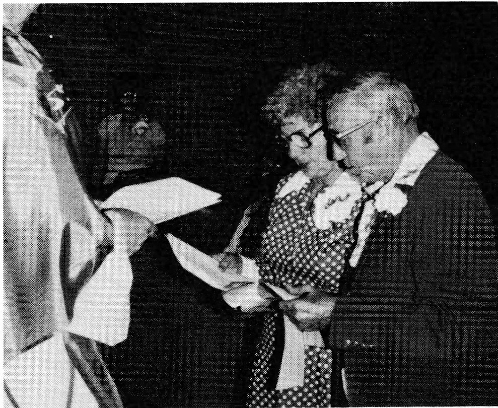
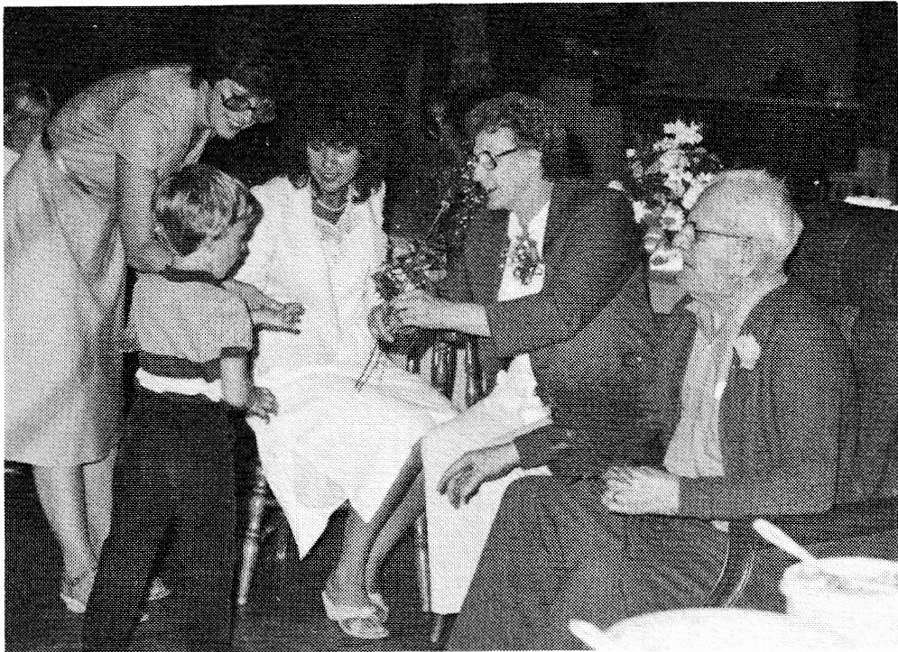
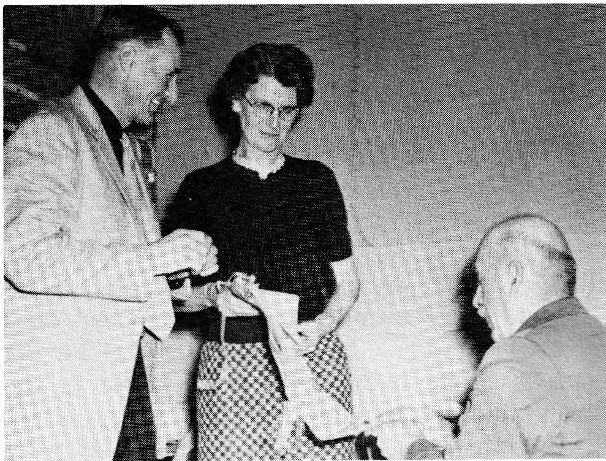
Louis Veillard making the presentation.
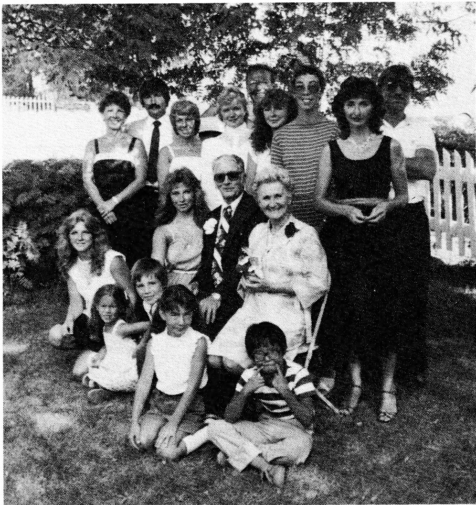
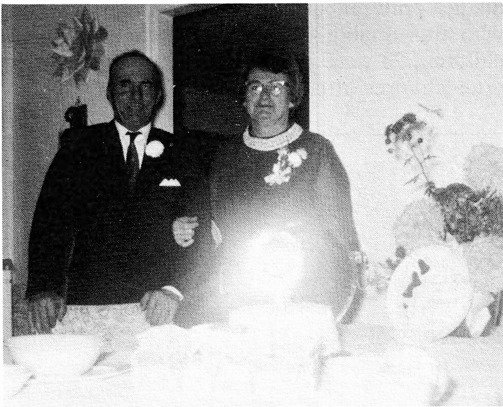
MRS. A. ALAIN CELEBRATES 90TH BIRTHDAY
[Copied from Hudson Bay Post-Review ... Wednesday, August 15, 1973]
Mrs. Alma Alain, ninety years of age on July 31, 1973, was the guest of honor at a family supper on July 28 in the Veillardville Hall with eighty-six family members in attendance. On Sunday, July 29, a Come and Go Tea was held at the home of her daughter and son-in-law, Mr. and Mrs. Gene Lessard, where over eighty came to extend congratulations.
Alma L'Heureux was born in Winnipeg, July 31, 1883, and moved with her parents to Jackfish, Saskatchewan. In 1907, she married Henry Alain and they farmed at Ruddell for seven years before moving to Delmas where they farmed eighteen years. In 1928, they moved to the Veillardville district. Mr. Alain passed away in 1967.
Mrs. Alain has four sons, Moise and Rolland of Hudson Bay, Louis of Vernon, B.C., and Paul of Kamloops; four daughters, Mrs. Harry (Yvonne) Wyman, Vancouver, Mrs. Angus (Marie Paule) Menzies, Mrs. Paul (Berthe) Marsollier, both of Flin Flon, Manitoba and Mrs. Gene (Edithe) Lessard of Hudson Bay; 38 grandchildren and 37 great grandchildren.
Mrs. Alain is quite active for her age, does most of her own housework and loves having company. She lives in her own house in the farmyard of her daughter, Edithe.
Present to help celebrate her birthday were her sister, Mrs. LeClare of North Battleford, her brother and sister-in-law, Mr. and Mrs. Antoine L'Heureux of Delmas; also numerous nephews and nieces from Battleford, Edam and Jackfish; all her children except Mrs. Yvonne Wyman, who was unable to attend. Of the 38 grandchildren, 28 were present and 19 of the 37 great grandchildren attended.
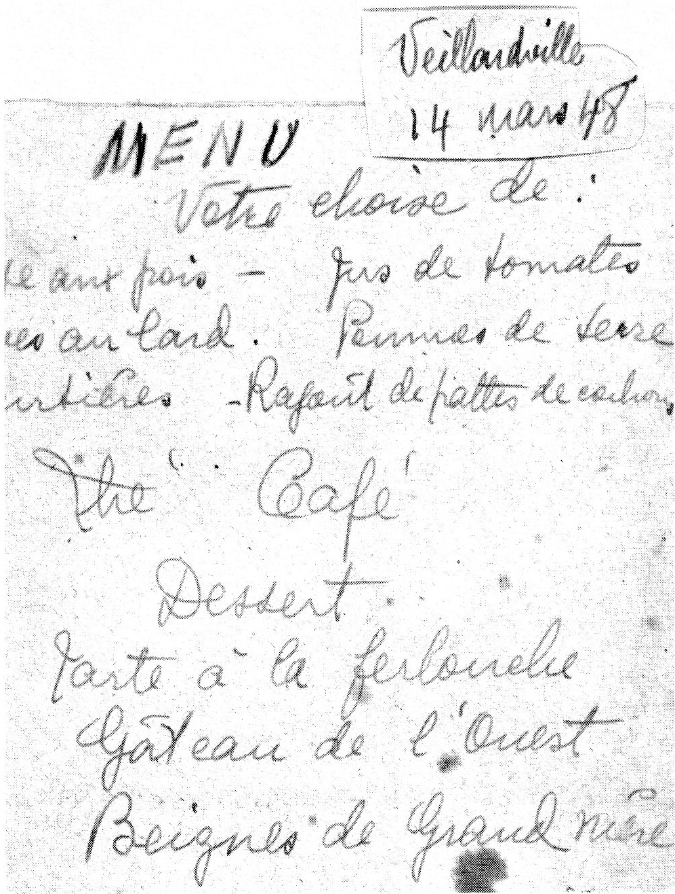
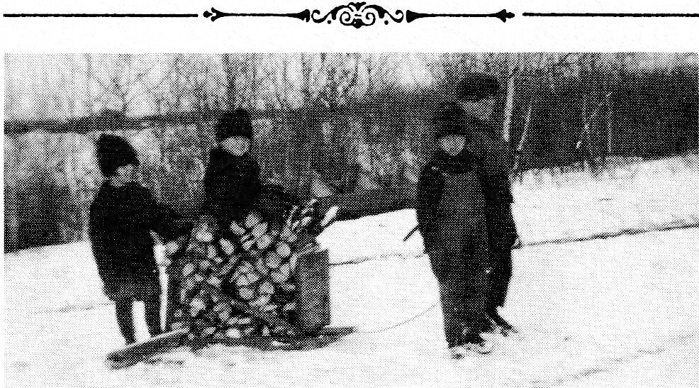
The ladies of St. Anthony's Altar Society held a Bazaar each fall (for a short period of time). Among other things it featured a supper (see the menu in French), the wheel of fortune, cards, sale of handwork and the opportunity to socialize. One year a lady read tea leaves.
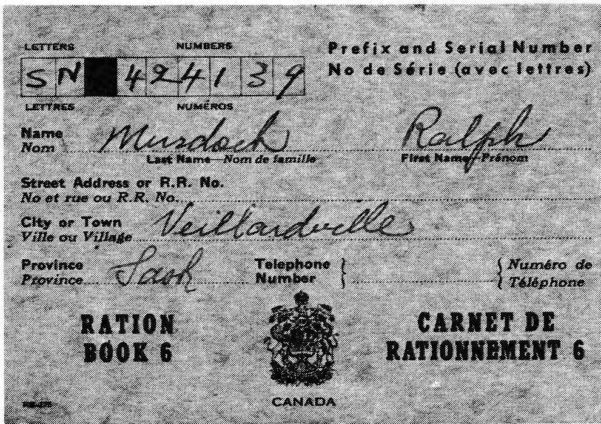
Ration books were issued during the Second World War through the Government. Each family was limited to items such as sugar, coffee, gas, among others. In order to purchase such items a ration book was needed.
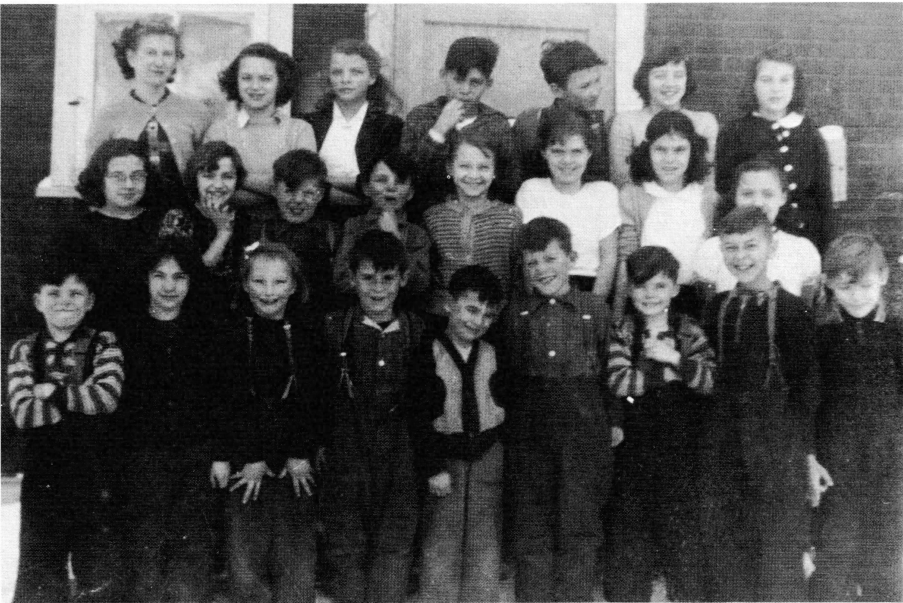
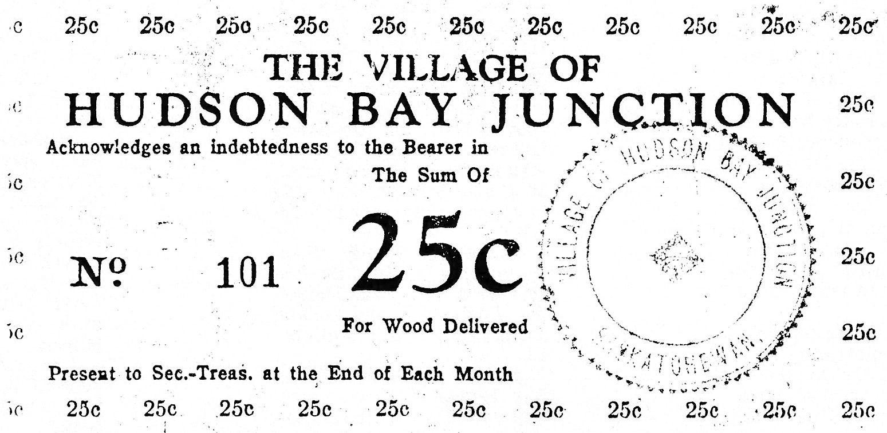
OBITUARIES
JOSEPH HENRY ALAIN
Funeral services were held Friday, December 22, 1967, from St. Dominic's Roman Catholic Church, Hudson Bay, for Joseph Henry Alain, of Veillardville, who had died December 19 in the Melfort Geriatric Centre at the age of 85. Rev. Fr. W.G. Timmermans officiated and the pallbearers were George Quinn, Leonard Thrussel, Philip Gagnon, Llewellyn Smith, John Szmul and Antoine Morin.
Born in St. Ubald, Quebec, January 25, 1882, the deceased had come to Saskatchewan in 1902, and in 1907 had married the former Marie Alma L'Heureux, of Jackfish, who survives him.
The Alains farmed at Ruddell for 7 years and then moved to Delmas where they resided for 18 years. In 1928, the family moved to the Veillardville district where they farmed until Mr. Alain retired. His death came after an illness lasting 7 years.
Besides his wife, Mr. Alain leaves to mourn 4 sons, Moise and Roland, of Veillardville, Louis, of Vernon, B.C., and Paul, of Kamloops, B.C.; four daughters, Mrs. Gene Lessard (Edithe), of Veillardville, Mrs. Angus Menzies (Marie-Paule), Flin Flon, Man., Mrs. Paul Marsollier (Bertha), of Flin Flon, and Mrs. Harry Wyman, (Yvonne), of Vancouver, B.C., as well as two half-brothers, Joseph and Louis Fugere, of Quebec. There are 38 grandchildren and 24 great-grandchildren. With the exception of Mrs. Harry Wyman, all the deceased's children attended the funeral.
Also attending the funeral from outside points were Mr. Joe L'Heureux, the deceased's brother-in-law, and two nephews from Jackfish; Sister Marcella, from Edmonton, Alberta, her sister Mrs. Adolf Reindl (Marlyse), from Saskatoon, and their brother, Bruce Alain, from Estevan.
Burial was in the Hudson Bay Roman Catholic cemetery.
ALMA MARIE ALAIN
Funeral services for Alma Marie Alain, 99, a pioneer of the Veillardville district were held Tuesday, December 21, 1982 from St. Dominic's Roman Catholic Church, Hudson Bay, Sask. Mrs. Alain passed away in the Hudson Bay Union Hospital on December 15, where she had been a patient since May 11, 1978. Msgr. E. Ulinski officiated at the service and pallbearers were George Quinn, Ralph Murdoch, Martin Lessard, John Szmul, Leonard Thrussell and Donald Morin.
Alma L'Heureux was born on July 31, 1883 in Winnipeg, Manitoba, the eldest of a family of 15. In 1907 she married Henry Alain and the couple farmed at Ruddell, Sask., for seven years and then moved to Delmas where they farmed 18 years. In 1928 they moved to the Veillardville district where they continued farming until Mr. Alain retired.
Predeceased by her husband Henry on December 19, 1967 she leaves to mourn four sons, Moise and Rolland of Veillardville; Louis of Vernon, B.C. and Paul of Kamloops; four daughters, Mrs. Gene Lessard (Edithe) of Veillardville, Mrs. Angus Menzies (Marie-Paule) and Mrs. Paul Marsollier (Bertha), both of Flin Flon, Manitoba and Mrs. Pat O'Brien (Yvonne) of Vancouver, B.C., and two sisters and three brothers. Also surviving are 38 grandchildren, 52 great grandchildren and two great-great grandchildren.
Immediate family members unable to attend the funeral were Mrs. Paul Marsollier, Louis Alain and Rolland Alain. Many relatives attended.
Burial was in the Hudson Bay Roman Catholic cemetery with Blair's Hudson Bay Funeral Chapel in charge of arrangements.
ROLAND JOSEPH ALAIN
Roland Alain of Veillardville, Sask., passed away Thursday, November 13, 1986.
Born October 27, 1913 at Delmas, Sask., Roland moved to Veillardville in 1928 with his family. In 1943, after working in many areas of Canada, he married Yvonne Veillard. The couple homesteaded north of Veillardville where the family currently resides.
Roland Alain is survived by his brothers and sisters; Smokey (Verna) of Hudson Bay, Yvonne O'Brien of Delta, B.C., Louis (Clara) of Vernon, B.C., Mary-Paule Menzies of Flin Flon, Manitoba, Edithe (Gene) Lessard of Veillardville, Bertha (Paul) Marsollier of Flin Flon, and Paul (Reine) of Kamloops, B.C., his wife, Yvonne of Veillardville; his sons and daughters Simone (Howie) Shouldice of Moose Jaw, Sask., Mo (Gloria) of Veillardville, Roger of Veillardville, Denis (Donna) of Yellowknife, NWT, Rosanne (Larry) in New Zealand, Jeannine (Ted) of Inuvik, NWT, and Lisa of Yellowknife, NWT and grandchildren, Jody and Karlee of Moose Jaw, Ben of Veillardville and Tess of Yellowknife.
The funeral mass was held at St. Dominic's Roman Catholic Church, Hudson Bay, November 17 with Father R. Van Vynckt as celebrant.
Honourary pallbearers were Maynard Myhr, Cliff Knutson, Harold Parks, Norris Axtell, Len Thrussell and George Quinn. Active pallbearers were Cliff Sjuberg, Donald Morin, Ed Block, Gordon Paproski, Ted Klima and Peter Lewellin. The ushers were Jake Lautner and John Meyers.
The eulogy was read by John Herne and the memorial book was attended by Una Sjuberg.
Interment was at the Roman Catholic cemetery. Blair's Hudson Bay Funeral Home was entrusted with funeral arrangements.